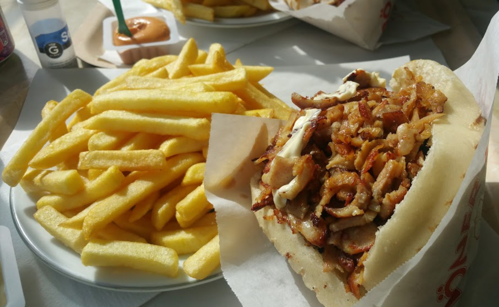
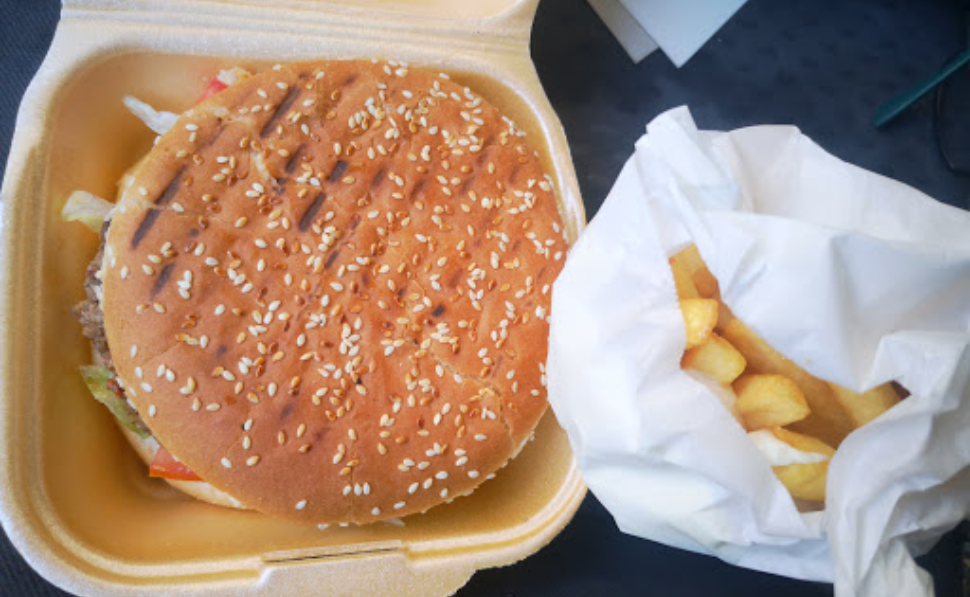
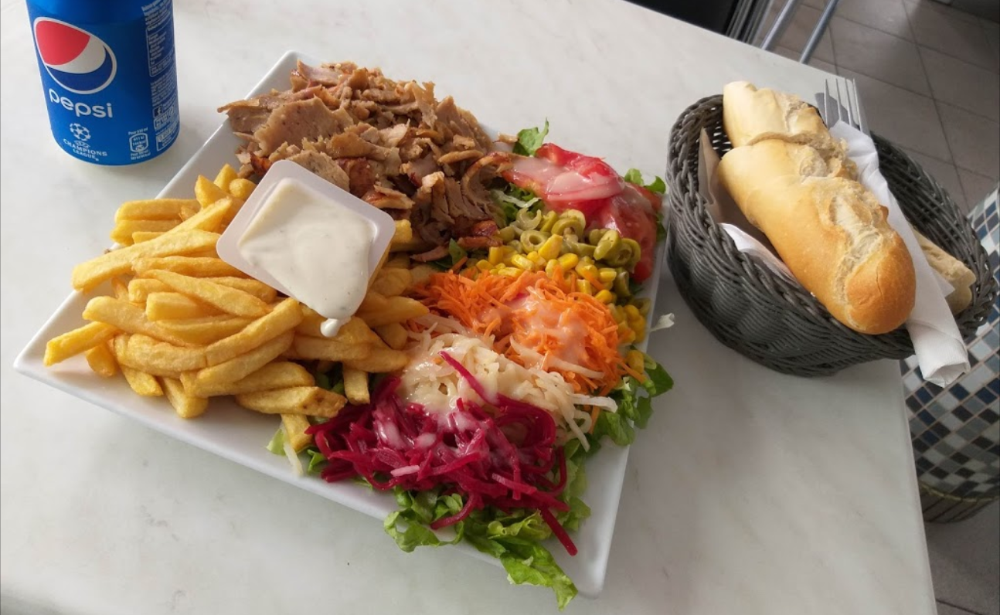

<!-- Bouton test défilement manuel -->
<button id="nextSlide" onclick="manualSlide()">Manual Slide</button>

<!-- Diaporama -->
<div id="slideshow">
    
    
    
</div>

<!-- Boutons 1 2 3 en forme de ronds ... à faire-->
<span id="timeline"></span>

<!-- Script lié au diaporama -->
<script src="slides.js"></script>